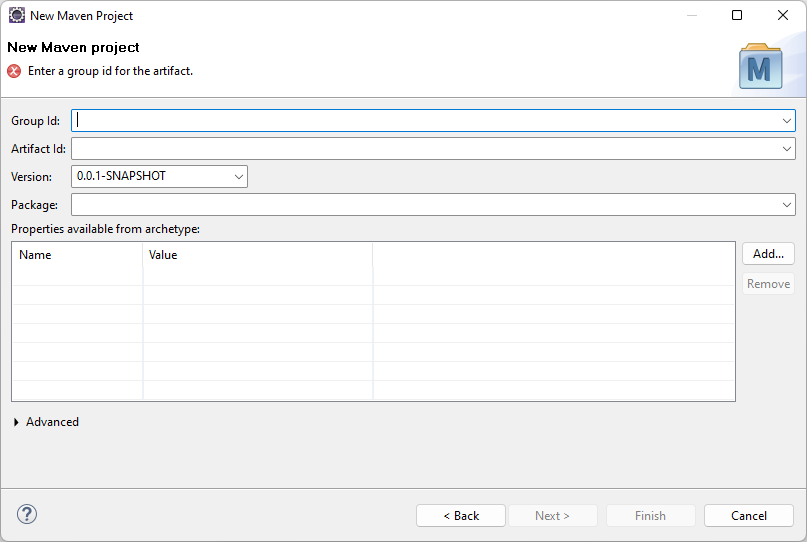

Next > и перейти к следующему шагу
 .
.
Окно, которое появляется на текущем шаге, без преувеличений:
САМОЕ ВАЖНОЕ ОКНО ИЗ ВСЕГО УРПАЖНЕНИЯ!
Ведь оно позволит нам определить Анатомию
нашего будущего проекта.
А именно, в нем мы определим:
groupId)artifactId)нашего приложения.
Когда окно появится на экране, оно будет выглядеть вот так:
И как вы уже заметили, в этом окне мы действительно сможем определить группу, артефакт, версию и пакет:
Более того, мы ещё ничего не успели ввести, а окно уже орет на нас ошибкой, чтобы мы ввели группу и артефакт:
Более-более того, окно уже предложило нам версию по умолчанию - 0.0.1-SNAPSHOT, которая нам вполне подойдёт:
Более-более-более того, пакет вообще будет генерироваться по умолчанию (по мере ввод других имен!), но об этом позже.
Поэтому, давайте в самом начале шага, пока мы не впали в эйфорию, придумаем, какими будут главные имена нашего приложения:
| Группа | com.skillsimprover |
| Артефакт | simple-maven-webapp |
| Версия (оставляем без изменения) | 0.0.1-SNAPSHOT |
| Корневой пакет (который получится в итоге) | НАПИШИ! |
Определившись с основными именами нашего будущего Web-приложения, дело остается за малым:
Вбить эти имена в соответствующие поля ввода
Давайте этим и займемся незамедлительно.
1. Вводим groupId
Мы решили, что нашим groupId будет com.skillsimprover, поэтому,
если мы введем его в поле Group Id, то окно будет выглядеть вот так:
Пакет генерируется по мере ввода группы и артефакта.
Он генерируется с нижними подчеркиваниями. Нижние подчеркивания нам не подходят!
Поэтому изменяем пакет
Можем выбрать одно из следующих имен:
Примечание-1: Отсутствие прежних названий групп и артефактов в новом Workspace.

Примечание-2: Секция Properties available from archetype.
Примечание-3: Секция Advanced
Действительно, если вы внимательно посмотрите на картинки выше в этом шаге, то заметите,
что внизу окна есть секция Advanced, которую мы ни разу не развернули за все описание шага.
Мы ее не разворачивали, потому что в ней нет ничего интересного или полезного.
Если очень хотите, давайте ее развернем. Ее внутренности выглядят вот так:
Картинка
Окей, мы убедились, что здесь нет ничего полезного.
Пора уже нажать кнопку Next > и перейти к следующему шагу
.